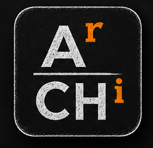
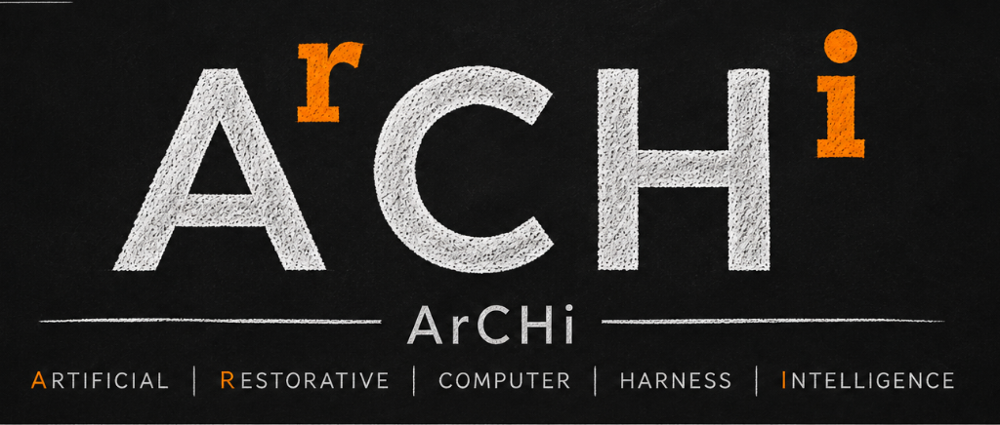

Push-to-Talk Privacy
ArCHi is deliberately not an always-listening assistant. The microphone is opened strictly during an explicitly triggered push-to-talk session.

A local-by-default, deterministic accessibility coordination layer for Omarchy and Hyprland. It routes explicit intent to trusted desktop tools without pretending to replace them.

See how explicit capture, strict allowlist routing, and local speech feedback work together—without replacing the desktop tools already in place.
This browser demo uses sample phrases and prerecorded audio; it does not record your microphone or control your desktop. Hold the button or press Space while focused, or select a phrase below.
ArCHi reduces friction by connecting existing desktop capabilities through clear boundaries and user-directed control.
ArCHi is deliberately not an always-listening assistant. The microphone is opened strictly during an explicitly triggered push-to-talk session.
No autonomous command selection. Trigger phrases map to inspectable argv arrays defined in your trusted commands.toml configuration.
ArCHi keeps spoken-response volume separate from your master system volume, automatically ducking other audio streams during speech.
Listen to selected articles or copied snippets on demand. Clipboard content is validated for UTF-8 safety and never stored in diagnostic logs.
Full transparent visibility with an immediate "off record" voice command to pause logging before handling confidential information.
Seamless window focusing, workspace switching, screenshot triggers, and OSD volume integration built for the Omarchy desktop stack.
Browse the active command allowlist. Easily search trigger phrases or filter by feature area.
config/commands.toml
ArCHi connects existing desktop capabilities through strict trust boundaries. The current beta is intentionally small; provider coordination is the direction.
Voxtype opens microphone solely during button press.
Matches transcript against trusted commands.toml allowlist.
Launches binaries directly as argv arrays without shell interpolation.
Spoken replies played through PipeWire with automatic stream ducking.
Today: explicit voice capture, allowlisted desktop actions, native screen zoom, local speech and feedback. Future: a general provider broker and semantic accessibility controls.
Set up the current Omarchy / Hyprland beta with its explicit capture, local speech, and desktop prerequisites.
git clone https://github.com/RawLabs/ArCHi.git
cd ArCHi
./install.sh
# To refresh an existing registry with current defaults (with backup):
./install.sh --refresh-registry
Installs helper scripts to ~/.local/bin and data files to ~/.local/share/archi without overwriting existing customizations.
# Core Desktop Stack
• Omarchy / Hyprland Wayland Compositor
• Python 3.11+
• Voxtype (for push-to-talk audio capture)
• PipeWire tools: pw-play, pw-record, wpctl, pw-dump
• Utilities: curl, jq, wl-clipboard, hyprctl, gtk-launch, xdg-open, pactl
• Local TTS helper or Pocket TTS endpoint (default: http://127.0.0.1:8000/tts)
• Default voice: alba; custom samples are optional (see INSTALL.md)hl.bind("SUPER + R", function()
hl.dispatch(hl.dsp.exec_cmd("archi-control-start"))
hl.dispatch(hl.dsp.submap("archi_control"))
end, { description = "Start ArCHi control mode" })
hl.define_submap("archi_control", function()
hl.bind("SUPER + R", function()
hl.dispatch(hl.dsp.exec_cmd("archi-control-stop"))
hl.dispatch(hl.dsp.submap("reset"))
end, { description = "Run ArCHi command" })
hl.bind("ESCAPE", function()
hl.dispatch(hl.dsp.exec_cmd("archi-control-cancel"))
hl.dispatch(hl.dsp.submap("reset"))
end, { description = "Cancel ArCHi command" })
end)